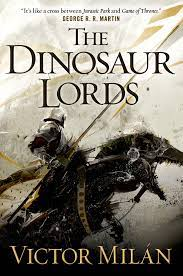
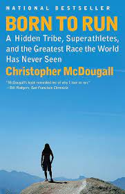
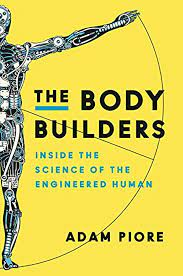
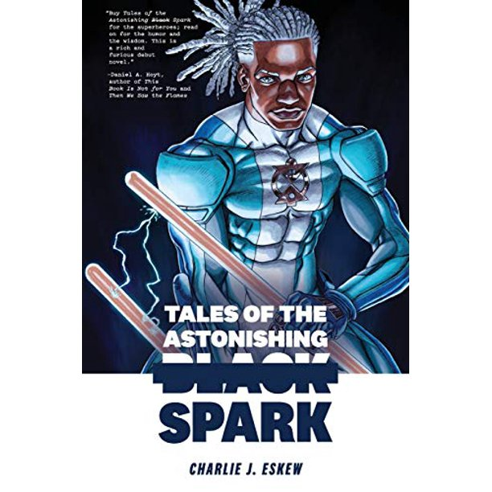

My prefered method when eating ramen is with chopsticks and a soup spoon for the broth.
I designed basic websites in the past and decided to join this class to enhance, or work more on, my backend web knowledge. For now, my skills set includes CSS , HTML, a bit of php and Javascript. I use php mostly for contact pages and then javascript for website interaction. I am still learning and excited to advance my skills. As that will help with adding more interaction and creativeness. In my current work I use Python and starting to get into SQL.
My prefered method when eating ramen is with chopsticks and a soup spoon for the broth.
| Name of Book | Image of the Cover | Author | 1-2 line summary of book |
|---|---|---|---|
| The Dinosaur Lords |  | Victor Milan | Medieval fantasy setting in which knights ride dinosars. Several countries would fight for dominance over each other. |
| Born to Run |  | Christopher McDougall | Autobiographical telling of contact with a hidden tribe in southern Mexico and their ability to run 100s of miles. |
| The Body Builders: Inside the science of the Engineering Human |  | Adam Piore | Goes into the science of human augmentation and provides stories on bioengineering human performance. |
| Tales of the astonishing Black Spark |  | Charlie J. Eskew | Donald the Protagonist life is changed after he gains super powers after being struck by lightning. He becomes the super hero known as the SPARK. |